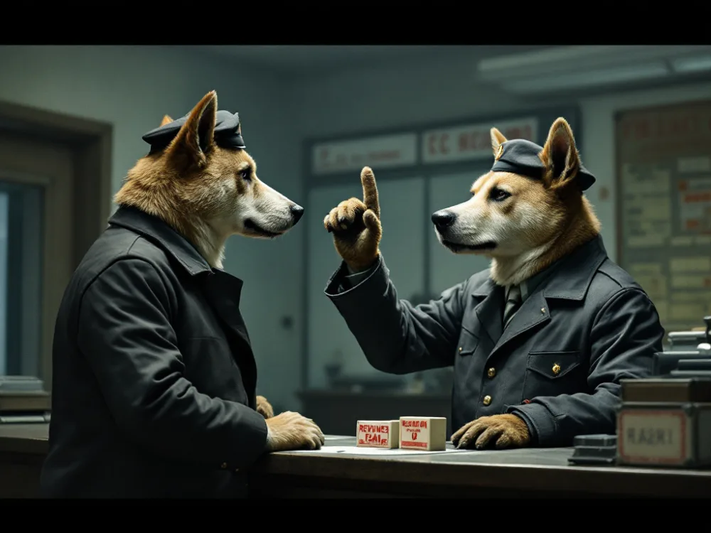
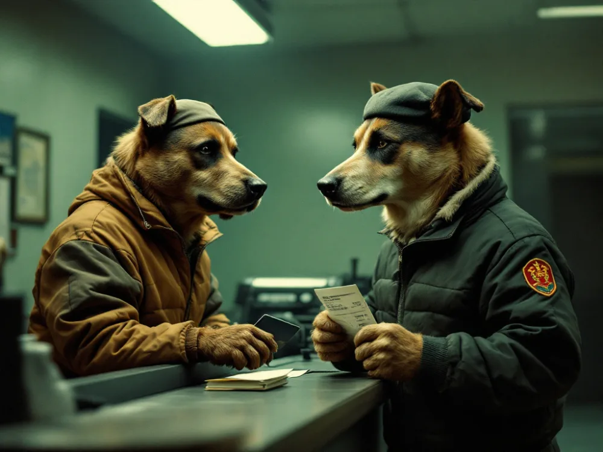

Наличные нужны в полиции, у мухтарисаГлава района: обычный житель с печатью, не офис. Заверяет фото и копию паспорта. Звонишь, договариваешься, приходишь к нему. и в суде; остальное картой.
АффидевитПросто бумажка на одну страницу: пишешь сам по шаблону (например, что девичья фамилия мамы и фамилия в свидетельстве — один человек). В суде клянёшься, подписываешь при сотруднике — он ставит печать. Вот и всё., если нужен, — ещё €0–10 наличными.
Одним платежом, картой или наличными; часто платит работодатель. На фасттреке при подаче платят только €5 000 (за каждого заявителя). €500 из официального списка — это позже, за сертификат, после одобрения. Если кассир выставит €500 вместо €5 000 — это ошибка, у одного заявителя из-за неё подачу переделывали.
Юристы берут €4–6 тысяч «за ускорение» — сверх €5 000 ничего не ускоряет. Полезна только проверка собранной папки (в чате ≈ €400); бесплатно её сделает тот, кто подавался недавно.
Этапы
01
за месяцы до подачи
Экзамены и проверка условий
Ускорение за €5 000 — только для highly skilled. Сессий мало, результаты ждут недели — начинай заранее.
Проверить, что фасттрек тебе подходит
10 минут
бесплатно
Подходит, если на все четыре пункта ответ «да»:
BCSПометка на карточке ВНЖ: твоя компания в реестре фирм с иностранным капиталом. Без неё ускорение за €5 000 недоступно. на карточке ВНЖ (компания из решения Совмина 92.018) и 2 года на ней. Смена компании без долгого разрыва допустима (в чате — до 30 дней).
Сдан греческий B1.
Сдан экзамен по культуре, балл ≥ 60 %.
1 095 дней легального проживания минимум, и за 12 месяцев до подачи — не больше 90 дней за границей.
Нет BCS на карточке — нужна справка о статусе компании (п. 13 списка); при зарплате ≥ €2 500 брутто — ещё диплом или 2 года опыта на такой должности. Спроси HR.
Как проверить свою компанию. Публичного списка нет — реестр Business Facilitation Unit закрытый. На карточке ВНЖ стоит «BCS» — компания в реестре, справка не нужна. Статус другой — спроси HR или напиши на bfu@meci.gov.cy, пусть подтвердят письмом. Проверь до оплаты: €5 000 не возвращаются.
Смену юрлица внутри группы на приёме замечают — подготовь документы (п. 3 и 12 папки АА — на кольцах, по номерам официального списка, сдаёшь навсегда. Б — оригиналы: показываешь офицеру и забираешь.).
Паспорт или ВНЖ кончаются до подачи? Перед тем как сдать старый паспорт в консульство, отсканируй все страницы со штампами: его могут оставить у себя, а штампы нужны для таблицы поездок. Сначала новый паспорт, потом продление ВНЖ (пластик привязан к номеру паспорта). Пластик может идти 6+ недель — на подачу и в полицию хватает ресиптаКвитанция или бумага об оплате. Здесь два вида: ресипты миграции (подтверждают подачу на ВНЖ) и ресипты за свет и воду. о продлении и Application Reception DocumentsБумага из миграции: подтверждает, что твою заявку на ВНЖ приняли. Выдают при каждой подаче — по ним видна история BCS без разрывов..
Готово, когда на все четыре пункта ответ «да» и ты знаешь, что твоя компания в реестре.
Греческий B1
2–3 сессии в год
€90, не возвращается
Где сдавать
Подходят оба: Центр греческого языка (Κέντρο Ελληνικής Γλώσσας, обычно в мае, бывает и августовская сессия; ближайший — 11 мая 2027) или Университет Кипра (январь и сентябрь, Никосия).
Служба экзаменов: ypiresiaexetaseon@schools.ac.cy, 22 582933.
Сертификат бессрочный; с аттестатом или дипломом на греческом экзамен не нужен. У нас сертификат был датирован августом и пришёл на почту меньше чем через 4 недели после экзамена.
Готово, когда на руках сертификат B1: копия пойдёт в папку А, оригинал — в Б.
Экзамен по культуре и политике Кипра
2–3 сессии в год · 45 минут
€20
Что это
Тест с выбором ответа на греческом: политика и общество Кипра с 1960 года, праздники, регионы, политики. Проходной балл 60 %.
Когда
2027: 6 марта, 3 июля, 20 ноября; заявки — всего неделя, за ~6 недель до экзамена: 11–18 января, 17–24 мая, 4–11 октября (проверь — объявление на gov.cy).
Запись
Онлайн через JCCsmartСайт для оплаты картой онлайн: экзамен по культуре и объявление в газете. → «Ministry of Education — Exam Fees», €20. Оплата открывается только на неделю приёма заявок, в остальное время страница пустая. Подробности — на странице Службы экзаменов.
Сертификат
У нас пришёл примерно через 2 недели после экзамена.
Проверить
В сертификате должен стоять балл; нет — запроси на yp_exetaseon@moec.gov.cy.
Готово, когда на руках сертификат с баллом ≥ 60 %: копия пойдёт в папку А, оригинал — в Б.
02
ровно за 2 месяца
Слот на подачу
Дата подачи задаёт все сроки — слот первым.
Поймать слот на подачу
ровно за 2 месяца, в ту же минуту
бесплатно
Слоты разбирают за секунды: заранее открой ссылку и включи автозаполнение.
Πελάτης — имя как в паспорте, почта, телефон. Регистрации нет.
Когда
Слот открывается ровно за 2 месяца, в ту же минуту: слот 15 ноября на 9:00 — 15 сентября в 9:00, на 9:30 — в 9:30. По средам документы на гражданство не принимают.
Как
За пару минут до получаса открой ссылку, выбери дату, обнови ровно в :00 или :30. Не успел — следующий получас. Подтверждение приходит письмом, свои брони — «Οι κρατήσεις μου».
Обновил — слота уже нет; у нас вышло только на 10:30. Отмена возможна за час до визита, поэтому места всплывают в последний момент: заходи по утрам. Заболел офицер — записи на день отменяют. Вопросы по записи — Мария Савва, msavva@papd.mof.gov.cy. В других районах правила свои — сверься с чатом.
Готово, когда пришло письмо-подтверждение с датой и временем — сохрани его.
03
за 3–4 недели
Переводы, газета, полиция
Зависишь от чужих сроков — запускай все три сразу после записи.
Переводы свидетельств у кипрского присяжного переводчика
готово за 1–3 рабочих дня после оплаты
€35–40 за документ
Рождение, брак, развод — на греческий, по 2 экземпляра, только у переводчика из реестра PIOРеестр присяжных переводчиков Кипра. Перевод должен быть от переводчика из него, иначе не примут.. Письма там читают плохо — у нас оба остались без ответа. Иди сразу лично с оригиналами всех трёх свидетельств и паспортом — всё сделают на месте. Закладывай неделю до подачи.
Идёшь лично с оригиналами и паспортом.
Получаешь счёт.
Платишь — начинают на следующий рабочий день.
Через 1–3 рабочих дня забираешь 2 экземпляра каждого перевода.
Проверь имя — как оно написано по-гречески (см. ниже).
Где
Любой из реестра PIO. Мы — в L.I.T.C.: Maximos Plaza, магазин 12, рядом с судом — карта; 25 343376, translations@litc.com.cy, пн–пт 9:00–13:30.
Взять
Оригиналы свидетельств о рождении, браке и разводе, паспорт.
Сказать
«Certified translation into Greek, 2 copies of each. Please write my name as in the passport.» Письмо со сканами — запасной вариант, лучше лично: пример письма.
Сроки, цена
Начинают на следующий рабочий день после оплаты счёта. У нас рождение и брак (по 2 экз.) — €80, готово за день после оплаты (просили побыстрее); развод ≈ €35–40. В чате ≈ €32 за документ. Чек может прийти от A&P Language Institute & Translation Center LTD — это та же контора.
Английский перевод с Мальты в Лимассоле не приняли (сентябрь 2026): нужен кипрский, через PIO. АпостильШтамп, подтверждающий документ за границей. На российские и советские документы для Кипра не нужен. на российские и советские документы не нужен — действует договор Кипра с СССР о правовой помощи. Специально не получай: на разводе у нас его не было, приняли. Если на документе апостиль уже стоит, переводчик переводит его вместе с документом.
Не выпендривайся с именем — бери стандартную греческую транслитерацию, которую предложит переводчик (в том числе «д»: ντ или Δ): это написание уйдёт в кипрский паспорт, и иначе грекам твоё имя будет странным. Выбери написание до заказа и пиши его одинаково везде — переводы, газета, анкета. Проверь окончание фамилии: Β (= V), не Φ (= F).
Готово, когда на руках по 2 экземпляра переводов рождения, брака и развода с печатью переводчика; имя везде написано одинаково.
Объявление о себе в газете — два дня подряд
~3–4 дня
€26,18
Что это. По закону о твоей подаче должны узнать все: в обычной кипрской газете два дня подряд печатают короткое объявление — твоё имя и адрес, «такой-то подаёт на гражданство». Мы делали это в газете Politis: дёшево и быстро.
Пишешь в газету на ads@politis.com.cy — готовое письмо, подставь только имя и адрес. Сразу приложи скан паспорта.
Ждёшь ответа — обычно в тот же день: цена €26,18 и как заплатить.
Платишь через JCCsmart (как — ниже) и сохраняешь чек.
Отвечаешь на то же письмо и прикладываешь чек. В ответ пришлют квитанцию и даты, когда выйдут газеты — обычно завтра и послезавтра.
В оба дня утром покупаешь газету, по 2 штуки.
Где купить
В киосках Politis часто нет. Мы покупали в супермаркете AlphaMega Linopetra: Georgiou Griva Digeni 118, Лимассол — карта, открыт с 7:00. Подойдёт и другой большой AlphaMega. Свежий номер выкладывают около 7:10 — проверь дату на первой странице.
Где объявление
Раздел «ΔΗΛΩΣΗ-ΔΗΜΟΣΙΕΥΜΑ», обычно стр. 17. Найди своё имя, сверь с паспортом и обведи ручкой. Ошибка — сразу пиши в газету.
Как заплатить
JCCsmart → Businesses → в поиске «Politis» → Politis Newspaper → Invoice Payment. Name — имя как в паспорте, Amount — сумма из письма, Description — «Naturalisation announcement, 2 days». Клиенты Bank of Cyprus могут зайти из 1bank. Или банковский перевод — реквизиты пришлют в письме.
Готово, когда на руках квитанция газеты (ΑΠΟΔΕΙΞΗ), чек JCC и 4 газеты (по 2 за каждый день) с обведённым объявлением.
Справка о несудимости
выдают сразу · действует 6 месяцев
€20 наличными
Центральное отделение полиции Лимассола, будни с утра.
Где
Αρχιεπισκόπου Λεοντίου Α΄ 1 — карта; вход слева от въезда на парковку.
Когда
Очередь с 8:00; у нас — полчаса очереди и 15 минут на справку.
Взять
Паспорт, карточку ВНЖ или ресипт о продлении и копии, €20 только наличными. Бланк дают на месте.
Готово, когда на руках бумага с печатью, выданная сегодня; она действует 6 месяцев — сверь с датой слота.
04
за 2–3 недели
Справки и выписки
Один визит или онлайн, порядок любой.
Фото и мухтарис
за один день
€10–20
Фотоателье: 2 фото 35×45.
Распечатай разворот паспорта.
Кинотархис — не обязательно своего района, подойдёт любой, к кому удобно (мы пошли к тому, кого знали). Позвони и договорись.
Приходи с фото, паспортом и распечаткой, €5–10 наличными.
Проверь печать и подпись на обороте обоих фото и на копии.
Фото
Любое φωτογραφείο: «φωτογραφίες διαβατηρίου», 2 шт. 35×45, белый фон, €5–10 (мы — Galatis Photo Studio, центр Лимассола).
Мухтарис
Любой кинотархис Лимассола — имена и телефоны в списке муниципалитета. Это житель района, не офис: звони, договаривайся, приходи. Не отвечает — подойдёт другой район или муниципалитет, 77 777788.
Взять
2 фото, паспорт, распечатку разворота с фото, по желанию договор аренды; €5–10 наличными.
Можно сказать
«Κάνω αίτηση για κυπριακή υπηκοότητα και χρειάζομαι πιστοποίηση για τις φωτογραφίες μου» — «подаю на гражданство, нужно заверить фото». И: «Μπορείτε να πιστοποιήσετε και αυτό το αντίγραφο του διαβατηρίου;» — «заверите и копию паспорта?»
Проверить
Печать и подпись на обороте обеих фото и на копии паспорта.
Готово, когда на руках 2 фото с печатью и подписью на обороте и заверенная копия паспорта.
Соцстрах
онлайн сразу или письмом за неделю
бесплатно
Нужны обе бумаги: А) онлайн по всем годам — сразу; Б) по месяцам и работодателям — письмом (~7 дней) или лично (5 минут). Начни с Б — письмо ждёт неделю.
А. Онлайн, сразу
Social Insurance Account Statement → Get Started → CY LoginЕдиный вход на госпорталы Кипра (раньше Ariadni). Аккаунт должен быть верифицирован. (раньше Ariadni, нужен верифицированный) → Print All Years → PDF. Забыл логин — «Forgot username».
Б. Письмом, ~неделя
Выписка по месяцам и работодателям: veveosislim@sid.mlsi.gov.cy (Лимассол), ответили за 7 дней (текст письма). Показывает, что при смене работодателя не было разрыва.
Б. Лично
5 минут в отделении на ул. Франклина Рузвельта, с ARCНомер твоей карточки ВНЖ. Нужен в письмах и в таблицах поездок. — карта.
Готово, когда на руках 2 PDF: все годы и помесячно без пропусков.
Налоги, работа, банк
1–2 вечера + запрос в HR
бесплатно
Декларации TD1Твоя годовая налоговая декларация. Нужны за 5 лет, все страницы — со старого портала Taxisnet.
5 лет, все страницы. Если папку проверяет HR (частый случай у BCS-компаний), декларации попросят отдельно.
Логин TaxisnetСтарый налоговый портал, там лежат декларации прошлых лет. Логин отдельный, не CY Login. отдельный, не CY Login. Если декларации подаёт работодатель, аккаунт может быть на почте компании — сброс пароля сломает им доступ, сначала спроси HR.
Номер документа года → «Print the return» → Cmd+P / Ctrl+P → PDF. Так для каждого года.
Не нажимай «Submit (Declaration completion)» и «Change to TEMPORARY»: они начинают новую декларацию и возвращают поданную в черновик.
Старый адрес
В налоговой может быть прежний — не страшно. Если спросят: «The tax registry still has my old address; I have lived at [новый адрес] since [дата], as the rental contracts and payslips show». Сменить — форма T.D.2003.
От HR
TD63Годовая справка о зарплате и налогах от работодателя. Приходит в апреле, нужна за прошлый год. — годовая справка о зарплате, приходит в апреле (письмо «TD63»). PayslipsРасчётный листок — ежемесячная справка о зарплате. Обычно приходит на почту, нужны за 6–12 месяцев. за 6–12 месяцев — на почте. Все трудовые контракты за годы на Кипре; менял юрлицо или компанию — приложи все.
Миграция
Ресипты об оплате и Application Reception Documents из каждой подачи на ВНЖ показывают BCS по годам без разрывов. Старых карточек обычно нет — ресипты их заменяют.
Банк
6 месяцев: интернет-банк или отделение (печать не нужна), зарплату обведи. Revolut: Accounts → More → Statement → PDF; печатай первую страницу и страницы с платежами за аренду, обведи.
Свет и вода
Хватает двух последних ресиптов EACЭлектрическая компания Кипра. Её счета и ресипты подтверждают, что ты жил по адресу. и воды (JCC присылает на почту).
Готово, когда на руках 5 PDF деклараций (все страницы), TD63, payslips за 6–12 месяцев, выписка банка за 6 месяцев, контракты и два последних ресипта за свет и воду.
05
за 1–2 недели
Анкета M127 и суд
Анкета с тремя подписями, потом суд.
Анкета M127 и три поручителя
неделя на подписи
бесплатно
Порядок строгий:
Заполняешь дома, раздел XI не подписываешь.
Собираешь 3 подписи поручителей на стр. 4.
Только потом суд: маркиГербовые марки — так платят пошлину за документ. Продаются в суде в кабинете «Τα Χαρτόσημα», только наличные. в «Τα Χαρτόσημα» (€9 наличными) → окно Affidavit, подписываешь XI при сотруднике.
Заполнить
Каждая графа с примером — в «Как заполнить M127». Коротко: форма на греческом (скачать), латиницей, ЗАГЛАВНЫМИ. «Нет» — NONE. Графа 25 — адреса за 8 лет с датами, страны — «SEE ATTACHED TABLE». Графа 27 — CYPRUS, строку про госслужбу зачеркни. Нет детей — в разделе XI зачеркни фразу в скобках про детей, поставь инициалы. Подпись в разделе XI не ставь. Графы 5–7 и 25 (адрес, работодатель, даты аренды) заполняй последними: сначала спроси HR точное название юрлица из последних payslips и сверь даты по договорам. Черновик делай на ксерокопии бланка.
Поручители
Три киприота по рождению, не адвокат и не родственник (коллеги, знакомые, арендодатели, соседи). Самый долгий шаг — начинай за месяц до слота. Спрашивай 5–6 человек: соглашается примерно каждый второй. Лучше всего соглашаются преподаватели и коллеги; пожилой человек может отказаться, потому что не понимает, что подписывает, — покажи заполненный бланк. Пиши по-гречески, 3 строки, на «вы», приходи сам с бланком (текст сообщения). Каждый заполняет свой блок на стр. 4: имя заглавными, адрес с индексом, профессия, сколько лет знакомы, дата, подпись. Дату каждый ставит свою, будущую нельзя. Все три подписи — до твоей подписи в суде. «(όνομα αιτούντος)» необязательно: у нас в двух блоках пусто, анкету приняли.
Готово, когда анкета заполнена, раздел XI не подписан, на стр. 4 три подписи с датами не из будущего.
Суд: заверить M127 и аффидевит
утро будня, без записи
€9–17 наличными + запас
Марки на анкету, затем подпись при сотруднике в окне Affidavit.

Где
Окружной суд Лимассола, Георгиу Грива Дигени, напротив Maximos Plaza — карта. Вход в пристройку сбоку, со стороны Starbucks.
Когда
Будни к 8:30, без записи, живая очередь. Канцелярия открыта по будням 8:30–13:00, кроме государственных праздников. Бывает закрыт — мы раз пришли зря: накануне позвони в суд, +357 25806100 или 25806128, и спроси, заверяют ли M127 и аффидевит. У нас: пришли к 8:15, очереди не было, вышли в 8:35.
Взять
Анкету (4 стр.), паспорт, аффидевит в 2 экз. (не подписанный), наличные на марки — €9 плюс запас мелкими, карты не принимают. Чистый бланк M127 — на случай переписать.
Порядок
От входа немного направо, слева кабинет «Τα Χαρτόσημα» — марки на M127, €9. Затем окно Affidavit: подписываешь раздел XI и аффидевит при сотруднике, он ставит печать.
Сказать
«Χρειάζομαι χαρτόσημα για το έντυπο Μ127» — «нужны марки для формы M127». В окне: «Θέλω να πιστοποιήσω το Μ127 και ένα affidavit» — «хочу заверить M127 и аффидевит». Если спросят «Ορκίζεστε;» («клянётесь?») — «Ναι, ορκίζομαι».
АффидевитПросто бумажка на одну страницу: пишешь сам по шаблону (например, что девичья фамилия мамы и фамилия в свидетельстве — один человек). В суде клянёшься, подписываешь при сотруднике — он ставит печать. Вот и всё.
Нужен, если у мамы в свидетельстве о рождении фамилия по мужу, не девичья. Печатай по шаблону: «I, [имя], … my mother's surname at birth is [девичья] … [девичья], [по мужу] and [нынешняя] are one and the same person». Заверяют там же; по чату без марок, но держи €5–10.
Сборка — целый день (у нас ~7 часов) плюс вечера на сканы и печать. Сначала разложи всё на столе по номерам списка, потом вставляй в кольца с конца (16 → 1), иначе придётся вынимать. Оригиналы, которые тебе вернут, в папку А не клади — они в Б; сомневаешься — сделай копию.
Отдай папку на проверку за неделю до подачи: у нас проверка за 3 дня нашла ещё 4 дыры (оригинал развода, TD1 за 5 лет, ресипты за свет, официальные бланки таблиц поездок) — всё закрывали накануне.
Готово, когда папка А собрана по номерам списка, папка Б с оригиналами, чек-лист документов пройден.
07
день подачи
День подачи
Спокойно, вместе с кассой около часа.
Прийти за 10–15 минут
Окружная администрация Лимассола (Επαρχιακή Διοίκηση Λεμεσού): Anexartisias 159 (Ανεξαρτησίας 159), 3040 Лимассол — карта. Это главная торговая улица центра, «улица магазинов»; здание стоит напротив Zara.
Возьми с собой:
обе папки и паспорт;
письмо-подтверждение брони;
кто платит — или карту с лимитом €5 000;
ручку.
Порядок — вместе с кассой около часа, сама подача 10–15 минут:
Фасттрек принимает Καρολίνα Μπάμπα: офицер листает папку А по списку, смотрит оригиналы из папки Б и задаёт пару вопросов (вероисповедание — на решение не влияет; другим задавали про прошлые подачи, другие гражданства, телефон).
Касса: очередь до 20 минут, платишь €5 000.
Квитанция: проверь имя, сумму и номер дела.
Готово, когда ты на месте за 10–15 минут до слота с обеими папками, паспортом и тем, кто платит.
Касса — €5 000
€5 000 одним платежом
Часто €5 000 платит работодатель: в кассу идёт сотрудник HR с картой компании (у нас так). Сам — картой или наличными, но не пополам (по чату); заранее подними лимит карты. Очередь в кассу — до 20 минут.
Готово, когда €5 000 оплачены одним платежом и на руках квитанция об оплате.

Квитанция
Проверь имя, сумму и номер дела. Папку забирают, квитанция остаётся у тебя.
Готово, когда папку А забрали, квитанция у тебя.
08
около года
После подачи
Интервью в Никосии — месяцев через 9, потом письмо об одобрении и паспорт.
Интервью
Держи кипрский номер на связи — звонят из Никосии.
Просят: оригиналы паспорта и свидетельства о рождении, свежую выписку из банка, payslips за 6 месяцев, соцстрах за текущий и прошлый год, диплом с переводом.
Спрашивают по-гречески про жизнь на Кипре: работа, район, три друга-киприота (можно поручители), праздники. Документы про друзей не нужны.
Сменил работу или адрес — принеси новые документы.
Пока ждёшь: продлевай ВНЖ, новую работу бери только в компании из списка BCS — статус нужен до паспорта.
Готово, когда с собой оригиналы паспорта и свидетельства о рождении, свежая выписка банка, payslips за 6 месяцев, соцстрах за текущий и прошлый год, диплом с переводом; кипрский номер на связи.
После одобрения
От письма до паспорта — пара месяцев:
С письмом об одобрении — к своему офицеру без записи, оплатить €500 за сертификат о натурализации.
Ждёшь 1–3 недели: звонят, сертификат готов, два экземпляра.
Один заверь в суде (марки €9, наличными) и верни в администрацию — его отправят в Никосию в Civil Registry.
Ждёшь ещё около 2 недель.
Паспорт (ускоренный — €120) и ID-карту (€30) заказывают там же, для фасттрека без записи. Биометрию снимают на месте.
Дальше: сообщи банкам, работодателю, соцстраху и налоговой, верни банковскую гарантию под ВНЖ. Гражданам РФ — уведомить МВД о втором гражданстве.
Готово, когда на руках паспорт и ID-карта, а банки, работодатель, соцстрах и налоговая уведомлены.
Справочник
Таблицы поездок
Обе кладутся в папку А за анкетой. Дни считаются по дату подачи включительно; даты сверяй со штампами в паспортах — офицер сверяет их с базой.
Statement No. 2 — последние 12 месяцев
Официальный бланк «Κατάσταση παραμονής αλλοδαπού τους τελευταίους 12 μήνες» (скачать). Шапка: имя, дата подачи M127, номер дела в миграции (MP), ARC. Строка — один период на Кипре:
Прилёт (дата)
Паспорт, стр.
Вылет (дата)
Стр.
Месяцев
Дней
03/04/2025
№ паспорта, стр. 12
20/07/2025
стр. 13
2
5
…
…
…
…
…
…
Last arrival: 06/01/2026
№, стр.
—
Not applicable
4
9
TOTAL STAY
11
0 (333 дня)
Пример — данные выдуманные
Первая строка — прилёт до начала 12-месячного окна: дату пиши настоящую, а дни считай с начала окна (в примере подача 14/05/2026, окно с 15/05/2025, до вылета 20/07/2025 — 2 месяца 5 дней). Сумма всех строк плюс дни за границей = 365.
Внизу декларация «I the undersigned … solemnly declare…» — дата и подпись от руки.
Statement No. 2, выдуманный заявитель. На второй странице — декларация, дата и подпись от руки.
Arrivals and Departures Summary — за всё время
Шапка (шаблон): имя, гражданство, дата рождения, все паспорта, дата первого въезда, статус (BCS, категория), сертификат по греческому, минимум дней. Дальше строка на поездку:
Вылет
Возврат
Дней за границей
Дней на Кипре до вылета
Куда
20/12/2021
05/01/2022
16
101
Грузия — Тбилиси. Первый въезд 10/09/2021
…
…
…
…
…
—
—
—
129
На Кипре с последнего возврата по дату подачи включительно
ИТОГО
135
1 573
из минимума 1 095
Пример — данные выдуманные
Внизу две строки: набрано дней из минимума и дней за границей за 12 месяцев (максимум 90). Штамп выезда есть, а полёта не было — отдельная строка с пояснением.
Arrivals and Departures Summary, выдуманный заявитель: шапка, каждая поездка, итог по дням.
Как заполнить анкету M127
Бланк на греческом, 4 страницы, 32 графы. Ищи графу по номеру слева в бланке — рядом с каждым номером ниже написано, как она выглядит по-гречески, что значит и что в неё писать. Пример — на выдуманного Ивана Петрова.
Общие правила. Синяя ручка, печатные латинские буквы; имена — ЗАГЛАВНЫМИ, как в паспорте. Нечего писать — NONE (по-гречески ΟΥΔΕΝ, тоже принимают). Даты — ДД/ММ/ГГГГ. Раздел XI не подписывай — подпись в суде при сотруднике. Возьми второй чистый бланк на случай ошибки. Черновик делай на ксерокопии бланка. Графы 5–7 и 25 (адрес, работодатель, даты аренды) заполняй последними: сначала спроси HR точное название юрлица из последних payslips и сверь даты по договорам.
ΕΓΓΥΗΤΑΙ— Поручители: три одинаковых блока, по одному на человека
Όνομα (ΜΕ ΚΕΦΑΛΑΙΑ ΓΡΑΜΜΑΤΑ) · Πλήρης ταχυδρομική διεύθυνσις
Имя поручителя заглавными · полный адрес с индексом
Пишет сам поручитель, можно по-гречески
επάγγελμα ή ενασχόλησις
Профессия
Например «ιδιωτικός υπάλληλος» — частный служащий
(όνομα αιτούντος)
Твоё имя
Необязательно — у нас в двух блоках из трёх пусто
…διά το διάστημα των … ετών · Ημερομηνία · Υπογραφή
Сколько лет знакомы · дата · подпись
ΔΗΜΟΣΙΕΥΜΑΤΑ ΚΑΙ ΥΠΟΒΟΛΗ ΤΗΣ ΑΙΤΗΣΕΩΣ
Нижний блок — инструкция про газету
Ничего не писать
Чек-лист документов
Официальный список не говорит, за сколько лет нести бумаги. Ниже — минимум из чата и что приложили мы. Галочки сохраняются только в твоём браузере.
3 · ВНЖ — статус BCS последние 2 года без разрыва
Мы: все ресипты и Application Reception Documents с первого года — 11 страниц.
5–6 · Паспорта — все, в которых есть штампы Кипра
Мы: новый паспорт и старый со всеми поездками, пустые страницы тоже копировали.
7 · Поездки — за всё время на Кипре
9, 10 · Экзамены
11 · Жильё — нынешний адрес обязательно, прошлые годы без дыр
За каждый период нужен хотя бы один документ, связывающий тебя с адресом. Лучший — договор аренды; нет договора за год — закрывают счета за свет или воду на этот адрес, переводы или квитанции арендодателю.
Мы: год без договора закрыли ресиптами EAC, ещё один — квитанциями арендодателя и переводами из Revolut.
Договоры, заключённые до 01.01.2026, по чату нужно было заверять гербовым сбором; с 2026 года это отменено. Платить аренду наличными по закону нельзя — если так было, нужна расписка арендодателя.
12 · Доход — 5 лет налоги, 6–12 месяцев зарплаты, полгода банк
Мы: обе выписки соцстраха, TD1 за 5 лет (48 страниц), TD63, payslips за 11 месяцев, банк за 6 месяцев, все контракты. Декларации при проверке назвали очень важными.
1, 4 · Переводы — по 2 экземпляра
Папка А — сдаётся
Кольца, прозрачные файлыНе компьютерные: прозрачные пакетики-мультифоры с дырочками для колец. Продаются в любом канцтоварном, пачкой., порядок — по номерам официального списка приложений к M127. оригинал — сдаётся навсегда, копия — ксерокопия, распечатка — PDF, напечатанный на A4.
№
Документ
Вид
На что смотрят
спереди
Анкета M127, 4 стр.
оригинал
печать суда, 3 подписи поручителей
спереди
АффидевитПросто бумажка на одну страницу: пишешь сам по шаблону (например, что девичья фамилия мамы и фамилия в свидетельстве — один человек). В суде клянёшься, подписываешь при сотруднике — он ставит печать. Вот и всё. (если нужен)
оригинал
печать суда
спереди
Statement No. 2 и Arrivals and Departures Summary
распечатка
подпись и дата
14
2 фото 35×45 с печатью мухтариса
оригинал
в конверте, скрепкой к анкете
1
Свидетельство о рождении
копия
все развороты; по списку нужен оригинал — у нас приняли копию, оригинал был в Б
1
Перевод свидетельства о рождении (PIO)
оригинал
печать переводчика
2
Справка о несудимости
оригинал
не старше 6 месяцев
3
Действующий ВНЖ или ресипт о продлении
копия
статус BCS
3
Старые ресипты и Application Reception Documents из миграции
копии
история BCS без разрывов, даты обвести
4
Свидетельства о браке и о разводе
копии
—
4
Их переводы (PIO)
оригинал
—
5
Действующий паспорт, все страницы
копия
+ разворот, заверенный мухтарисом
6
Старый паспорт, все страницы
копия
штампы Кипра читаются
7
Таблица въездов-выездов — это те же Statement No. 2 и Summary
—
лежат спереди, см. «Таблицы поездок»
8
Газетные листы со страницей объявления, оба дня
оригинал
объявление обведено, видна дата
8
Квитанция газеты (ΑΠΟΔΕΙΞΗ) и чек оплаты JCC
распечатка
—
9
Сертификат по греческому B1
копия
—
10
Сертификат экзамена по культуре
копия
≥ 60 %
11
Договоры аренды за все годы, все страницы
копии
без разрывов по датам
11
Квитанции за аренду и/или банковские переводы арендодателю
копии
платежи обведены
11
Счета или ресипты за свет (EAC) и воду
распечатка
хватает двух последних
12
Соцстрах: выписка за все годы + помесячно по работодателям
распечатка
без разрывов
12
Payslips за 6–12 месяцев
распечатка
—
12
TD63 и налоговые декларации TD1 за 5 лет
распечатка
все страницы
12
Выписка из кипрского банка за 6 месяцев
распечатка
зарплата обведена, печать банка не нужна
12
Трудовые контракты — все, включая текущий
копии
—
13, 15
—
не нужны
13 — не нужен при BCS; 15 — €500 на фасттреке платят после одобрения, не при подаче
16
Квитанция об оплате €5 000
выдают в кассе
твоё имя
Папка Б — оригиналы
Показать по просьбе офицера и забрать с собой. Обычно смотрят паспорта и сертификаты, иногда договор аренды.
Действующий и старый паспорта, карточка ВНЖ
Свидетельства о рождении, о браке, о разводе
Сертификаты по греческому и по культуре
Договоры аренды
Вторые экземпляры переводов, вторые экземпляры газет целиком
Старые переводы и любые бумаги «на всякий случай» — например, справка о браке родителей
Файлы и шаблоны
Шаблоны, которые пригодились при подаче. Word или Google Docs, печать на A4.
Statement No. 2 — пребывание за последние 12 месяцевDOCX
Официальный бланк, как прислала HR: прилёты, вылеты, страницы паспорта, итог, декларация с подписью.
Сводка, которая ходит между подающимися: шапка и таблица поездок. В строке минимума поставь 1 095 для highly skilled с B1 (в шаблоне 1 825 — обычная натурализация).
АффидевитПросто бумажка на одну страницу: пишешь сам по шаблону (например, что девичья фамилия мамы и фамилия в свидетельстве — один человек). В суде клянёшься, подписываешь при сотруднике — он ставит печать. Вот и всё. — фамилия мамыDOCX
Заголовок, четыре пункта, строки для подписей. Свои данные — вместо квадратных скобок. Печатай 2 экземпляра, не подписывай — подпись в суде.
Короткие письма, которые сработали. Как пользоваться: копируй греческий (или английский) текст, подставь свои данные в [скобках] и отправь. Русский пересказ ниже — для тебя, его не отправляй.
Газета Politis · ads@politis.com.cy · тема: Ανακοίνωση για αίτηση πολιτογράφησης / Naturalisation announcement
Καλησπέρα σας,
Θα ήθελα να δημοσιεύσω ανακοίνωση για αίτηση πολιτογράφησης σε δύο συνεχόμενα φύλλα της εφημερίδας.
Ονοματεπώνυμο: [NAME SURNAME — латиницей, как в паспорте]
Διεύθυνση: [улица, номер, индекс, район, город — по-гречески]
Επισυνάπτω αντίγραφο του διαβατηρίου μου.
Παρακαλώ ενημερώστε με για το κόστος και τα στοιχεία πληρωμής.
Ευχαριστώ,
[Name Surname]
[телефон]
«Хочу опубликовать объявление о подаче на натурализацию в двух номерах подряд. Имя, адрес. Прикладываю копию паспорта. Сообщите стоимость и реквизиты». Не забудь вложить скан паспорта — мы сначала не приложили, и газета попросила его отдельно. Мы писали имя и по-гречески, и латиницей в скобках — в газете напечатали латиницей, как в паспорте. Так и нужно: имя в объявлении должно совпадать с паспортом и анкетой M127. Ответят в тот же день: сумма и как платить через JCCsmart.
Газета Politis, после оплаты · ответом в ту же переписку
Καλησπέρα,
Σας ευχαριστώ. Επισυνάπτω αντίγραφο του διαβατηρίου μου και την απόδειξη πληρωμής μέσω JCC (€[сумма], αρ. αναφοράς [номер]).
Παρακαλώ ενημερώστε με για τις ημερομηνίες δημοσίευσης.
Με εκτίμηση,
[Name Surname]
«Прикладываю копию паспорта и чек JCC. Сообщите даты публикации». Если паспорт уже отправлял — убери его из фразы. В ответ пришлют квитанцию газеты (ΑΠΟΔΕΙΞΗ) и даты выхода — квитанцию тоже в папку.
Καλησπέρα σας,
Παρακαλώ όπως μου εκδώσετε βεβαίωση των εισφορών μου στις Κοινωνικές Ασφαλίσεις για τα έτη [первый год]–[текущий год].
Η βεβαίωση χρειάζεται για αίτηση πολιτογράφησης (έντυπο Μ127).
Ονοματεπώνυμο: [Name Surname]
Α.Κ.Α.: [номер соцстраха]
ARC: [номер ARC]
Ευχαριστώ πολύ,
[Name Surname]
τηλ. [телефон]
«Прошу выдать справку о взносах за такие-то годы для заявления M127». Через 3–7 дней приходит по PDF на каждый год — помесячно и по работодателям, с подписью директора.
Присяжный переводчик · на английском · можно, но лучше лично
Hello,
I need certified translations into Greek of these documents, 2 copies of each:
1. Birth certificate
2. Marriage certificate
3. Divorce certificate
Scans and my passport are attached. Please write my name as in the passport: [NAME SURNAME].
Please tell me the price and when I can pick them up.
Thank you,
[Name Surname]
[телефон]
Работу начинают со следующего рабочего дня после оплаты счёта. Оригиналы приносишь в офис.
Поручителю · WhatsApp, по-гречески, на «вы»
Γεια σας κύριε [имя в звательном падеже]! Τι κάνετε;
Θέλω να σας ρωτήσω κάτι. Θέλω να γίνω Κύπριος πολίτης και μαζεύω υπογραφές από Κύπριους που με ξέρουν. Θα μπορούσατε να με βοηθήσετε; Είναι μόνο το όνομα, η διεύθυνση και υπογραφή σε ένα χαρτί. Δεν έχετε καμία ευθύνη. Αν δεν θέλετε, κανένα πρόβλημα 🙏
«Хочу стать гражданином Кипра и собираю подписи киприотов, которые меня знают. Не могли бы помочь? Только имя, адрес и подпись на одной бумаге, никакой ответственности. Если не хотите — без проблем».